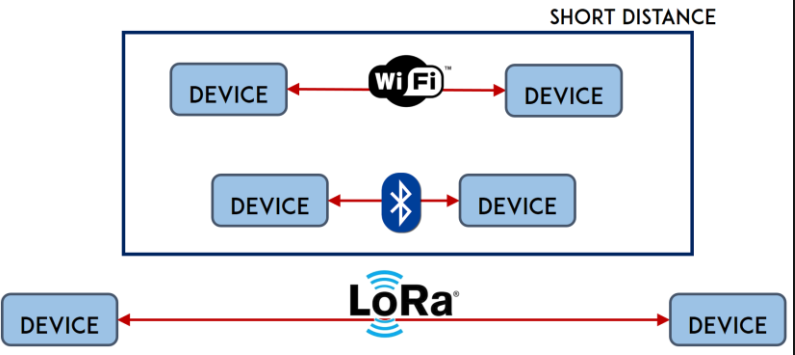
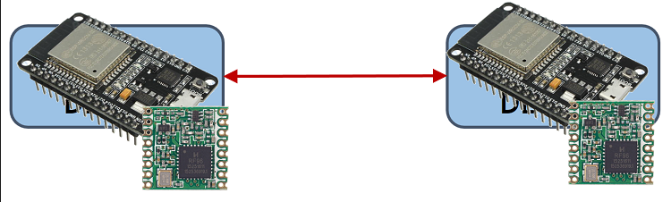
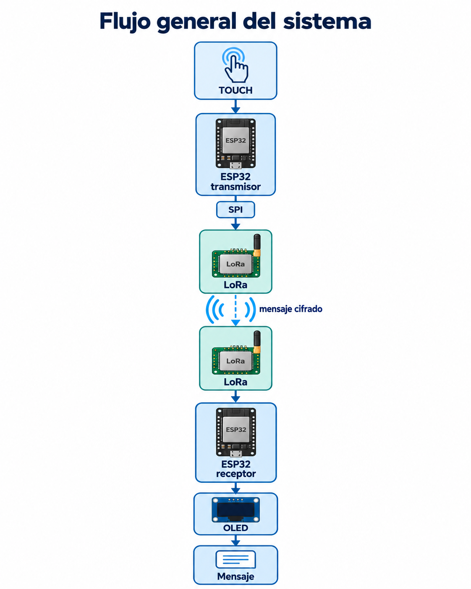
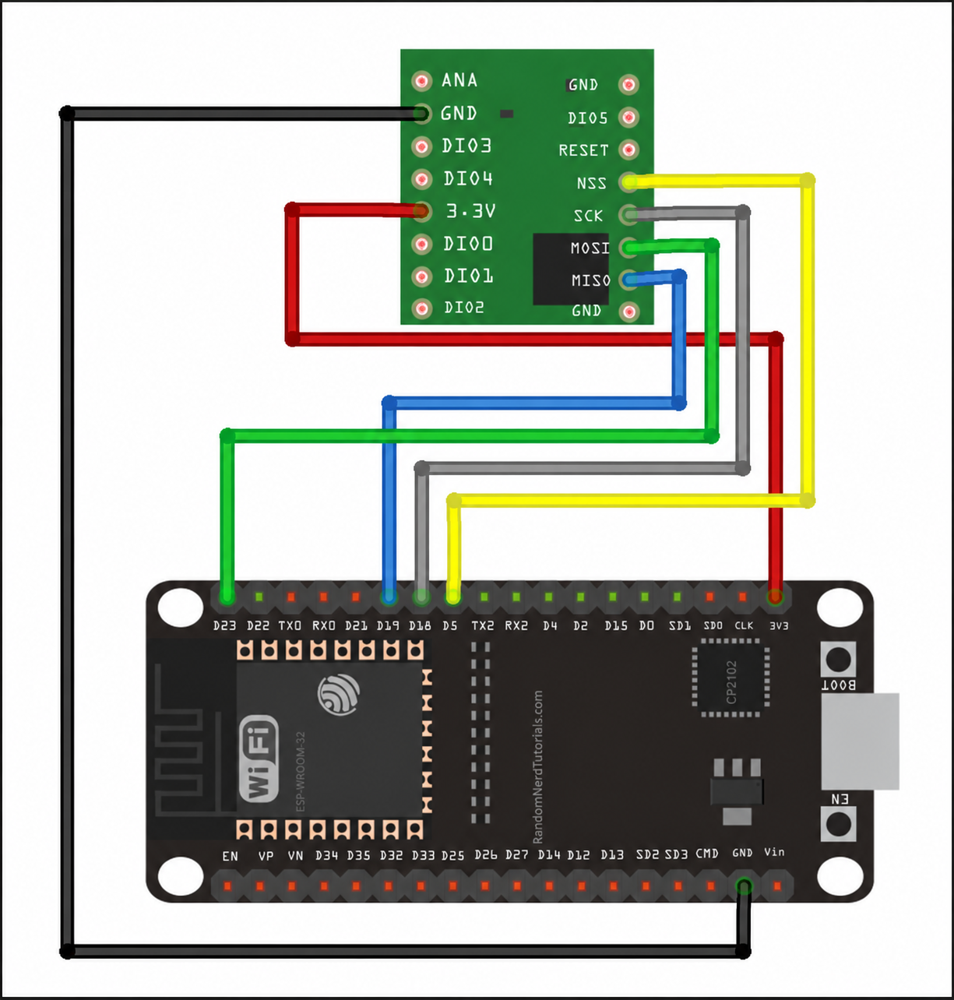
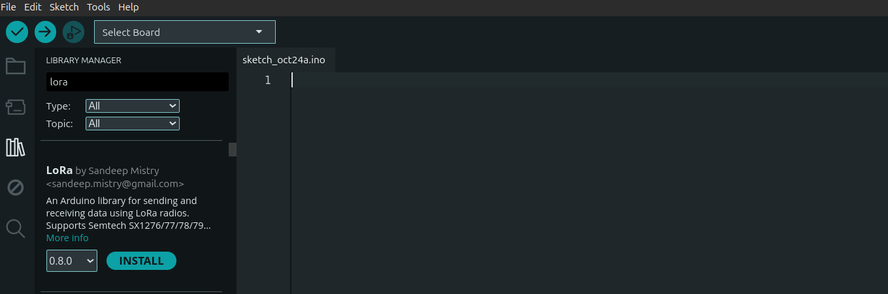

Taller - Comunicación LoRa con ESP32
Introducción
En este taller se implementará una comunicación inalámbrica entre dispositivos ESP32 utilizando módulos LoRa.
Un dispositivo tendrá la función de transmitir información y el otro recibirá el mensaje y lo mostrará mediante una pantalla OLED.
El envío del mensaje será activado utilizando uno de los sensores capacitivos Touch incorporados en el ESP32.
¿Qué es LoRa?
LoRa proviene de Long Range y es una tecnología de comunicación inalámbrica diseñada para transmitir pequeñas cantidades de información mediante radiofrecuencia a largas distancias y con un consumo relativamente bajo de energía siendo altamente inmune a interferencias.

LoRa y LoRaWAN
Aunque sus nombres son similares, LoRa y LoRaWAN no son exactamente lo mismo.
| Concepto | Descripción |
|---|---|
| LoRa | Tecnología de modulación utilizada para transmitir información mediante radiofrecuencia. |
| LoRaWAN | Protocolo de red construido sobre LoRa que puede utilizar gateways y una infraestructura de red. |
Módulo LoRa utilizado
Para la práctica se utilizarán módulos RFM96W. Estos módulos funcionan como transceptores, es decir, tienen capacidad para transmitir y recibir información.
El módulo se comunica con el ESP32 mediante el protocolo SPI.

En esta práctica los módulos serán configurados para trabajar a 433 MHz
En el programa esto se configura mediante:
LoRa.begin(433E6);¿Qué es un paquete?
La información enviada por LoRa se organiza en paquetes. Un paquete puede contener diferentes datos como identificadores, mensajes o valores de sensores.
En este taller se utilizará el siguiente formato:
ORIGEN|DESTINO|MENSAJEPor ejemplo:
1|2|HVMHLI ZXGRELEl paquete anterior puede interpretarse como:
Origen: 1
Destino: 2
Mensaje: HVMHLI ZXGRELArquitectura del taller
Los seis dispositivos se organizarán en tres parejas.
| Pareja | Transmisor | Receptor |
|---|---|---|
| Pareja 1 | ID 1 | ID 2 |
| Pareja 2 | ID 3 | ID 4 |
| Pareja 3 | ID 5 | ID 6 |
El flujo general del sistema será:

Materiales
| Componente | Función |
|---|---|
| ESP32 | Procesamiento, lectura Touch y control de la comunicación. |
| RFM96W | Transmisión y recepción mediante LoRa. |
| OLED SH1106 | Visualización del mensaje recibido. |
| Protoboard | Montaje del circuito. |
| Jumpers | Conexión entre los componentes. |
| Antena | Transmisión y recepción de radiofrecuencia. |
Conexiones y pines utilizados
Módulo LoRa RFM96W
El módulo LoRa se comunica con el ESP32 mediante SPI.
| RFM96W | ESP32 | Función |
|---|---|---|
| 3.3V | 3V3 | Alimentación |
| GND | GND | Tierra común |
| MISO | GPIO 19 | Datos LoRa → ESP32 |
| MOSI | GPIO 23 | Datos ESP32 → LoRa |
| SCK | GPIO 18 | Reloj SPI |
| NSS | GPIO 5 | Selección del módulo |
| ANT | Jumper | Señal de radiofrecuencia |

Pantalla OLED SH1106
| OLED | ESP32 | Función |
|---|---|---|
| VCC | 3.3 V | Alimentación |
| GND | GND | Tierra |
| SDA | GPIO 21 | Datos I2C |
| SCL | GPIO 22 | Reloj I2C |
Sensor Touch
| Elemento | ESP32 | Función |
|---|---|---|
| Touch | GPIO 27 | Detectar el toque que inicia el envío del mensaje. |
Librerías necesarias
Antes de cargar los programas, instale la siguiente libreria desde el Administrador de Librerías de Arduino IDE.

Las librerías que ya deben tener instaladas son:
- Adafruit GFX Library
- Adafruit SH110X
También se utilizarán las librerías:
#include <SPI.h>
#include <Wire.h>Estas forman parte del entorno utilizado por el ESP32.
Identificadores de dispositivos
Debido a que todos los dispositivos trabajarán utilizando la misma frecuencia, cada ESP32 tendrá un identificador.
El transmisor tendrá:
const int MI_ID = 1;
const int DESTINO_ID = 2;Mientras que el receptor correspondiente tendrá:
const int MI_ID = 2;Sensor Touch
El ESP32 posee entradas capacitivas capaces de detectar cambios cuando una persona toca una superficie conectada al pin.
Para esta actividad se utilizará el:
GPIO 27El valor se obtiene mediante:
int valorTouch = touchRead(27);Cuando el valor sea menor al umbral establecido, se considerará que el usuario tocó el sensor.
if (valorTouch < UMBRAL_TOUCH) {
// Enviar mensaje
}Dinámica: mensaje cifrado
Como parte del taller, el transmisor enviará un mensaje cifrado al receptor correspondiente.
Se utilizará el método Atbash.
¿Cómo funciona Atbash?
Atbash es un cifrado por sustitución en el cual el alfabeto se reemplaza por el mismo alfabeto escrito en orden inverso.
Normal: ABCDEFGHIJKLMNOPQRSTUVWXYZ
Atbash: ZYXWVUTSRQPONMLKJIHGFEDCBAPor ejemplo:
A → Z
B → Y
C → X
D → W
Por lo tanto:
HOLA → SLOZDinámica
El transmisor tendrá un mensaje original, lo cifrará utilizando Atbash y posteriormente lo enviará mediante LoRa.
Mensaje original SENSOR ACTIVO │ ▼ Atbash │ ▼ HVMHLI ZXGREL │ ▼ LoRa │ ▼ OLED
El receptor no descifrará automáticamente el mensaje. La OLED mostrará únicamente el texto cifrado.
El estudiante receptor deberá utilizar la tabla de Atbash para descubrir cuál era el mensaje original.
Código del transmisor
El transmisor detectará un toque en el GPIO 27, cifrará el mensaje utilizando Atbash y enviará el paquete al receptor correspondiente.
#include
#include
// ======================================================
// IDENTIFICACION
// ======================================================
const int MI_ID = 1;
const int DESTINO_ID = 2;
String mensajeOriginal = "PON TU MENSAJE AQUI";
// ======================================================
// PINES
// ======================================================
// definir los pines del módulo LoRa con #define
// según la tabla de conexiones.
// definir el pin del sensor Touch
// y el umbral. Recuerde comprobar el
// valor de su ESP32 antes de fijar el umbral.
// ======================================================
// ATBASH
// ======================================================
char convertirAtbash(char letra) {
if (letra >= 'A' && letra <= 'Z') {
return 'Z' - (letra - 'A');
}
if (letra >= 'a' && letra <= 'z') {
return 'z' - (letra - 'a');
}
return letra;
}
String cifrarAtbash(String mensaje) {
String mensajeCifrado = "";
for (int i = 0; i < mensaje.length(); i++) {
mensajeCifrado += convertirAtbash(mensaje.charAt(i));
}
return mensajeCifrado;
}
// ======================================================
// ENVIAR MENSAJE
// ======================================================
void enviarMensaje() {
String mensajeCifrado = cifrarAtbash(mensajeOriginal);
Serial.println();
Serial.println("TOUCH DETECTADO");
Serial.print("Mensaje original: ");
Serial.println(mensajeOriginal);
Serial.print("Mensaje cifrado: ");
Serial.println(mensajeCifrado);
// Formato del paquete: ORIGEN|DESTINO|MENSAJE
LoRa.beginPacket();
LoRa.print(MI_ID);
LoRa.print("|");
LoRa.print(DESTINO_ID);
LoRa.print("|");
LoRa.print(mensajeCifrado);
LoRa.endPacket();
Serial.print("Paquete enviado: ");
Serial.print(MI_ID);
Serial.print("|");
Serial.print(DESTINO_ID);
Serial.print("|");
Serial.println(mensajeCifrado);
Serial.println("----------------------------");
}
// ======================================================
// SETUP
// ======================================================
void setup() {
Serial.begin(115200);
delay(1000);
Serial.println("TRANSMISOR LORA");
Serial.print("Mi ID: ");
Serial.println(MI_ID);
Serial.print("Destino: ");
Serial.println(DESTINO_ID);
// iniciar el bus SPI con SPI.begin(...) usando los pines definidos
// indicar a la librería los pines del módulo con LoRa.setPins(...)
// (NSS, RESET = -1, DIO0 = -1)
if (!LoRa.begin(433E6)) {
Serial.println("ERROR: No se pudo iniciar LoRa");
while (true);
}
Serial.println("LoRa iniciado correctamente");
Serial.println("Esperando toque...");
}
// ======================================================
// LOOP
// ======================================================
void loop() {
// leer el sensor Touch
// detectar el toque (valor menor al umbral) y evitar que se
// envíen varios paquetes mientras el dedo sigue presionando
// (use una variable de estado)
// cuando se detecte un toque nuevo, llamar a enviarMensaje()
delay(100);
}
} MI_ID,
DESTINO_ID,
mensajeOriginal según corresponda.
Código del receptor
El receptor verificará el ID de destino del paquete. Si coincide con su propio ID, mostrará el mensaje cifrado en la pantalla OLED.
#include
#include
#include
#include
#include
// ======================================================
// IDENTIFICACIÓN
// ======================================================
const int MI_ID = 2;
// ======================================================
// OLED
// ======================================================
#define I2C_ADDRESS 0x3C
#define SCREEN_WIDTH 128
#define SCREEN_HEIGHT 64
#define OLED_RESET -1
Adafruit_SH1106G display(SCREEN_WIDTH, SCREEN_HEIGHT, &Wire, OLED_RESET);
// ======================================================
// PINES LORA
// ======================================================
// definir los pines del módulo LoRa con #define
// según la tabla de conexiones.
// ======================================================
// SETUP
// ======================================================
void setup() {
Serial.begin(115200);
delay(1000);
Serial.println("RECEPTOR LORA");
Serial.print("Mi ID: ");
Serial.println(MI_ID);
// ----------------------------------------------------
// OLED (mensaje de inicio)
// ----------------------------------------------------
Wire.begin();
delay(250);
if (!display.begin(I2C_ADDRESS, true)) {
Serial.println("ERROR: OLED no encontrada");
while (true);
}
display.clearDisplay();
display.setTextColor(SH110X_WHITE);
display.setTextSize(1);
display.setCursor(0, 0);
display.println("RECEPTOR LORA");
display.setCursor(0, 18);
display.print("ID: ");
display.println(MI_ID);
display.setCursor(0, 36);
display.println("Esperando mensaje...");
display.display();
// ----------------------------------------------------
// LORA
// ----------------------------------------------------
// iniciar el bus SPI con SPI.begin(...) usando los pines definidos
// indicar a la librería los pines del módulo con LoRa.setPins(...)
// (NSS, RESET = -1, DIO0 = -1)
if (!LoRa.begin(433E6)) {
Serial.println("ERROR: No se pudo iniciar LoRa");
// OLED (mensaje de error)
display.clearDisplay();
display.setCursor(0, 0);
display.println("ERROR LORA");
display.display();
while (true);
}
Serial.println("LoRa iniciado correctamente");
Serial.println("Esperando mensajes...");
}
// ======================================================
// LOOP
// ======================================================
void loop() {
int packetSize = LoRa.parsePacket();
if (packetSize) {
String paquete = "";
while (LoRa.available()) {
paquete += (char)LoRa.read();
}
procesarMensaje(paquete);
}
}
// ======================================================
// PROCESAR MENSAJE
// ======================================================
void procesarMensaje(String paquete) {
Serial.println();
Serial.print("Paquete recibido: ");
Serial.println(paquete);
// Formato: ORIGEN|DESTINO|MENSAJE
int separador1 = paquete.indexOf('|');
int separador2 = paquete.indexOf('|', separador1 + 1);
if (separador1 == -1 || separador2 == -1) {
Serial.println("Formato incorrecto");
return;
}
int idOrigen = paquete.substring(0, separador1).toInt();
int idDestino = paquete.substring(separador1 + 1, separador2).toInt();
String mensaje = paquete.substring(separador2 + 1);
Serial.print("Origen: ");
Serial.println(idOrigen);
Serial.print("Destino: ");
Serial.println(idDestino);
Serial.print("Mensaje cifrado: ");
Serial.println(mensaje);
// ----------------------------------------------------
// COMPROBAR DESTINO
// ----------------------------------------------------
if (idDestino != MI_ID) {
Serial.println("Mensaje ignorado.");
return;
}
int rssi = LoRa.packetRssi();
Serial.println("Mensaje aceptado");
Serial.print("RSSI: ");
Serial.println(rssi);
// ----------------------------------------------------
// OLED
// ----------------------------------------------------
// limpiar la pantalla y mostrar en la OLED:
// - el ID de origen ("Mensaje de ID:")
// - el texto "Mensaje cifrado:"
// - el mensaje cifrado recibido
// - el RSSI
display.display();
} MI_ID según corresponda.
Prueba completa del sistema
Encienda el transmisor y el receptor correspondiente.
El transmisor deberá indicar:
LoRa iniciado correctamente
Esperando toque...Al tocar el GPIO 27 deberá realizarse el envío.
En el Monitor Serial del transmisor se observará información similar a:
TOUCH DETECTADO
Mensaje original: SENSOR ACTIVO
Mensaje cifrado: HVMHLI ZXGREL
Paquete enviado: 1|2|HVMHLI ZXGRELEl receptor correspondiente deberá mostrar:
Paquete recibido: 1|2|HVMHLI ZXGREL
Origen: 1
Destino: 2
Mensaje cifrado: HVMHLI ZXGREL
Mensaje aceptado
RSSI: -...Además, la OLED mostrará el mensaje cifrado recibido.
Finalmente, el estudiante receptor deberá descifrar manualmente el mensaje utilizando Atbash.
Entregables
Al finalizar el taller, cada estudiante deberá entregar un único documento en formato PDF con las evidencias correspondientes a su trabajo.
El documento deberá incluir:
- Link del repositorio de GitHub donde se encuentre el código utilizado durante el taller.
-
Imagen del Monitor Serial correspondiente
al rol asignado.
Si el estudiante trabajó como transmisor, la imagen deberá mostrar el mensaje original y su envío.
Si trabajó como receptor, deberá mostrar la recepción, aceptación del paquete y el mensaje decifrado.
Evaluación de la actividad
La calificación final de esta actividad se obtiene mediante la aplicación de un Factor de Dominio sobre la nota obtenida en los entregables.
Nota de Entregables
Evalúa la calidad técnica, estructura y cumplimiento de los requisitos del producto entregado.
Esta nota se asignará en una escala de 0 a 10.
Factor de Dominio
El Factor de Dominio es un coeficiente entre 0.0 y 1.0 determinado mediante una evaluación complementaria, como una defensa oral o preguntas de comprensión.
Un factor de 1.0 representa un dominio completo, mientras que valores inferiores reducen la nota final de acuerdo con los vacíos conceptuales evidenciados.